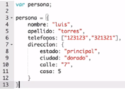
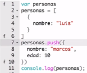
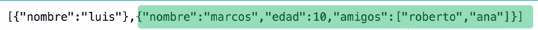
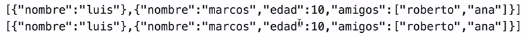
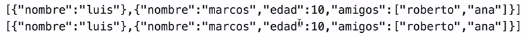
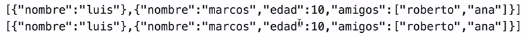

Cuando estamos usando variables o estructuras de control estamos guardando “datos” y estos datos
pueden tener diferentes “tipos” por eso la palabra compuesta es “tipo de datos”. Para visualizar
el tipo de dato que está guardando una variable podemos usar el method typeOf el cual
nos retorna el tipo de dato de una variable seleccionada.
Los tipos de datos que podemos encontrar en nuestro código son los siguientes:
Int
Los datos de tipo entero son los datos numéricos que no poseen decimales, estos datos pueden ser tanto
positivos como negativos. Por ejemplo: 3, 15, -20, etc.
Ejemplo
let numeroCinco = 5;
Float
Los datos de tipo float son los datos numéricos con decimales, cabe destacar, que los decimales son
separados por un punto “.”, ya que si usamos una coma no lo tomará como decimal. Dentro de este tipo
entran todos los números que contengan un “.” En su estructura.
Ejemplo
let numeroFloat = 0.5;
String
Los tipos de datos Sring son cadenas de caracteres los cuales al declarar let o const seguido de un
“=” los strings van encerrados entre comillas (“”). Las comillas pueden ser dobles o simples y si comenzamos
un string con comillas dobles debemos cerrar el mismo con las mismas comillas dobles. Debemos saber que si
pasamos un valor numérico a una estructura string el código a este lo leerá como un carácter y no como un
número. Por ejemplo:
Ejemplo
let tipoString = 'Soy una cadena de caracteres de tipo string';
Array
Los tipos de datos de listas o arreglos son llamados estructuras de control ya que dentro de estos
pueden almacenar varias variables de diferentes tipos de datos. Específicamente las listas son
declaradas como una variable y sus valores están encerrados entre [] corchetes. Debemos destacar que
si los valores son de tipo string deben estar encerrados entre comillas. Además, cada uno de los valores
sean string o de otro tipo deben estar separados por comas.
Ejemplo
let colores = ["Rojo", "Blanco", "Negro"];
Objeto
Los tipos de dato diccionarios u objetos son otro tipo de estructuras de control, pero estos almacenan
los datos de manera diferente. Como ya hemos mencionado el diccionario cuando se declara estamos
creando un objeto el cual tiene diferentes características o tipos de datos, es decir, estamos
declarando una variable que dentro tiene una sub variable y esta tiene una lista con uno o más
valores.
Para ser más claro en el ejemplo, supongamos que declaramos un objeto con nombre “persona” y los
valores que le corresponden a persona son “altura” con valor: 160 y “colorDeOjos” con valor “café”.
Como podemos notar persona tiene dentro dos variables con sus respectivos valores cada uno.
let objetoPersona = {"altura": 160, colorDeOjos: "café"};
La estructura de los objetos se declara entre {} llaves y por cada clave – valor que tenga debe estar
separado por coma. También debemos saber que los strings llevan las “” comillas.
Los objetos comienzan con claves las que les siguen “:” dos puntos para luego colocar el valor de
dicha clave.
Ejemplo
let objetoPersona = {"altura": 160, colorDeOjos: "café"};
Boolean
Otro tipo de dato que podemos utilizar es el Boolean el cual recibe solo 2 valores: True or False.
Debemos saber que mientras estamos trabajando en nuestro código podemos utilizar en una misma línea muchos tipos de datos.
Ejemplo
let estaActivo = true;
NaN
Este tipo de dato representa que la variable indicada no es de tipo número. Generalmente la podemos encontrar
como un error en un debug en la consola, ya que, estamos pudiendo mostrar una variable de tipo numero
y le estamos pasando una variable de tipo string.
Una práctica en donde podemos encontrar este caso es cuando utilizamos el méthod
Number constructor, parseFloat y parseInt.
Ejemplo
let numeroString = 'numeroCinco';console.log(parseInt(numeroString));
Datos Compuestos
Vamos a elaborar el ejemplo con tipo de datos compuestos redefiniendo la variable “persona”, vamos
a hacerlo definiendo una variable de tipo objeto en donde una de sus propiedades
se llamará "telefonos" y su valor es de tipo array la cual contiene sus números de
teléfonos representados como strings.
Si consultamos las propiedades de “persona” utilizando “persona.telefonos[0]” nos retornara
el primer teléfono en el arreglo “123123”. También, podemos imprimir “persona.telefonos.length”,
es decir, el tamaño del arreglo de “teléfonos” esto nos retornará la cantidad de elementos
que hay dentro del arreglo o es lo mismo decir la longitud del arreglo: “2”.
console.log(personas.telefonos.length);
Podemos anidar objetos más complejos dentro de otros objetos:

En este caso tenemos un atributo de “dirección” que, a su vez es otro objeto. Ahora tenemos un objeto
dentro de otro objeto que, adicionalmente también podría usar estructuras mas complejas como arreglos.
La manera de acceder a las propiedades es similar a lo anteriormente realizado, para ilustrar el
proceso podemos imprimir:
Esto nos retornará “principal”.
console.log(persona.direccion.estado);
Cuando trabajamos con objetos si llamamos a una propiedad que no existe (Ejemplo: persona.edad),
esto nos retornará “undefined”, es decir, que esa propiedad no está declarada.
Cuando nos retorna un valor undefined, se toma como valor el boolean “false”.
Podemos asignar de forma dinámica sin alterar la estructura a “persona.edad” de la
siguiente manera:
persona.edad = 20;
Le decimos al objeto “persona" que tiene una propiedad con nombre edad
y a su vez le asignamos el valor “20”. Haciendo un repaso sobre los scopes
de las variables, debemos prestar atención que: si tenemos esta variable declarada (línea 16) pero
hacemos una impresión en una línea anterior a la declaración (ej: 15) nos seguirá
retornando “undefined”:
Cambiar el tipo de dato
En algunas ocasiones deberemos pasar algún valor de un dato a otro, generalmente esto ocurre cuando
tenemos un valor numérico en str “25” y lo queremos pasar como valor “int”. Esto puede lograrse con la
función parseInt(). Para lograr el funcionamiento correcto de esta función debemos crear una nueva
variable o renombrar la ya existente y luego hacer el llamado de esta función y dentro de sus parámetros
colocar la variable a la que deseamos cambiar su tipo de dato.
Ejemplo
let numeroTipoLetra = '25';
Ahora convertimos el valor a número de tipo int
let numeroTipoNumero = parseInt(numeroTipoLetra);
Undefined & Null
Undefined
Cuando nos aparece un valor undefined pueden ser dos aspectos:
La variable que estamos especificando "no existe", es decir, no está declarada en el código que estamos
utilizando. Otra ventana que nos puede salir que tiene el mismo resultado es "not defined". Puede ser
probable que este cartel salga cuando estamos utilizando variables que no tienen valores dentro de funciones,
bucles, etc.
let variableVacía;console.log(variableVacía)
También, es un aspecto muy importante saber que un valor undefined nos retornará
como resultado final un valor booleano 'false'.
Null
La diferencia de Null y Undefined es que Null si reconoce la variable y su valor es Null,
es decir, vacío.
Este tipo de dato es muy útil cuando no tenemos un valor inicial para una variable que
luego la completamos con el valor del algoritmo que estemos creando. Por ejemplo:
Primero podemos declarar que el botón de encendido de un programa es null y luego de un
par de procesos ese botón de encendido cambie a True y el funcionamiento arranque.
Conclusión: El valor null es voluntario lo cual es implementado por el programador, cuando estamos
hablando de un valor undefined es un error que estamos cometiendo en nuestro código.
let variableNull = null;console.log(variableNull)
TypeOf
Este método (TypeOf) nos permite saber que tipo de dato es el valor de la variable que lo está
conteniendo. Si declaramos una variable tipo "array" y luego la hacemos pasar por typeof
nos retornará el tipo de valor:
let elementos = ["Tierra", "Fuego", "Agua", "Aire"];console.log(typeof elementos);
Retorna en consola de JS: Object
Tipo de datos: Estructuras
Variables simples y variables complejas
Las variables simples son los strings, int, float. Las variables complejas están compuestas por más de
un valor tales como los arrays y objetos.
Copiando Valores
En el ejemplo más adelante, declaramos una variable con nombre color que tiene asignado “blanco” y otra
llamada color2 que tiene asignado “color”. En este caso JS crea una copia del contenido de “color” y se
lo coloca a “color2”. Por lo que si imprimimos ambas variables nos retornará “blanco”.
let color = blanco;let copiaColor = color;
Como podemos observar la variable copiaColor se le ha asignado una copia del
valor que tiene la variable color, es decir, 'blanco'.
Variables Complejas
Cuando tenemos variables complejas no se copia el contenido, sino que se les asigna la misma referencia
en memoria.
Tenemos una variable “personas” que es un array que contiene un objeto y dentro tiene una propiedad
'nombre' con valor cuyo “Luis”.
Ahora vamos a agregar otro elemento objeto al array con el method para arrays ”push()”:

Si prestamos atención debemos crear una estructura de objeto al utilizar este método
en este caso en específico. La anterior declaración nos retornará:
Agregamos al objeto nuevo que hemos creado (que se encuentra en la posición [1])
del array, una lista llamada “amigos” y con valor “Roberto” y “ana”.
Al correrlo podemos observar que la segunda posición del objeto que se encuentra en [1], tiene un
atributo que se llama “amigos” con valores “Roberto” y “Ana” (ver este resultado en consola).

Asignemos otra variable con nombre “usuarios” y el valor le pasamos el contenido de lo que tiene “personas”.
Entonces a la nueva variable “usuarios” le asignamos “personas” y si imprimimos “usarios” este tendrá los
mismos valores que “personas”.

Podemos modificar uno de los elementos dentro de “personas” con “usuario” por ejemplo, el nombre de “Marcos”.
Para ello en usuarios[1] (segundo elemento del arreglo) .nombre le asignamos “Pedro”.


 
